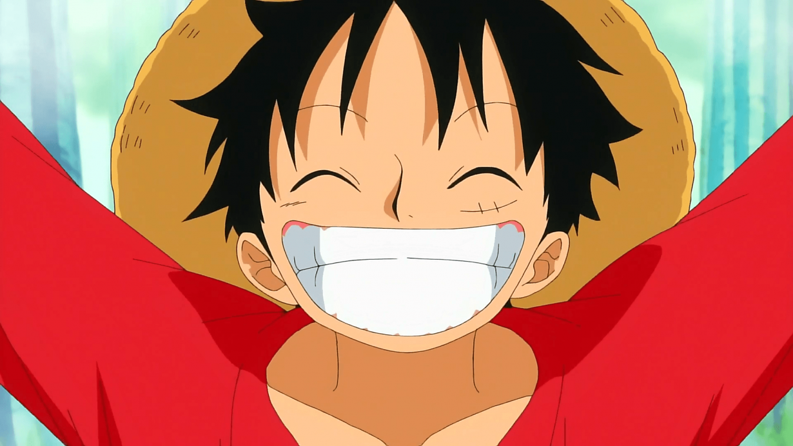

 Luffy es el protagonista principal de la serie de manga y anime one piece. Comio una fruta del diablo de tipo paramecia llamada furta Gomu Gomu, que lo convirtio en un hombre de goma.Ademas posee varias habilidades que le hacen ser un pirate mas que especial,un gran ejemplo de ello es la capacidad de utilizar Haoshoku haki que solo posee una persona dentro de un millón y poseer los otrs tipos de haki. su objetivo principal es convertise en el proximo Rey de los piratas, encontrar el legendario tesoro como el "One Piece", que pertenecio al anterior Rey de los piratas Gol D. Roger y conquistar el nuevo mundo liderando una tripulación de grandes piratas. Porque lo elegi?
lo eligi porque es un personaje que tiene una personalidad muy diferente a muchos personajes de anime tiene una de las grandes caracteristicas que pocos tiene es que es muy empatico ante las situaciones y tiene el valor de enfrentar cada obstaculo que se le representa en el camino, y tambien lo eligi porque tiende a ser una personaje libre que hace lo que el quiere sin instrucciones toma decisiones a la ligera pero lo hace con el sentido de sentir una aventura, en pocas palabras es un personaje libre en busca de aventuras durante su gran viaje. Página pricipal